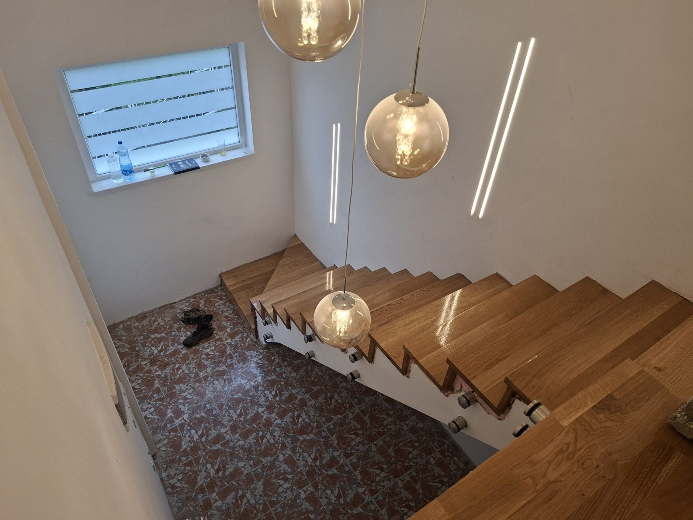
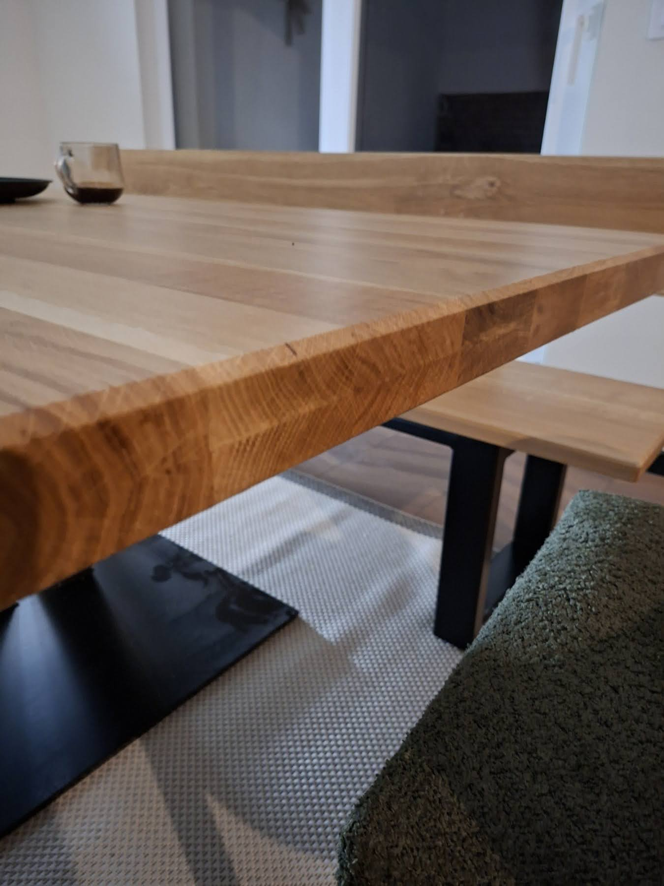
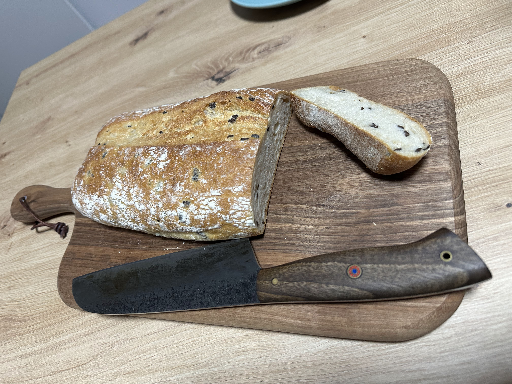

Kako odabrati pravo drvo za nameštaj i stolariju
Hrast, orah, jasen, bukva, javor — svaka vrsta drveta ima svoju priču, svoja svojstva i svoju namenu. Ovaj vodič će vam pomoći da razumete razlike i donesete pravu odluku pre nego što naručite komad koji treba da traje generacijama.

Foto: D&M Masiv — stepenište od masivnog drveta, ručna izrada
1. Tvrdo drvo vs. meko drvo
Prva podela koja se mora razumeti je ona između tvrdog i mekog drveta. Ova razlika nije samo u čvrstoći — ona definiše trajnost, cenu i primenu komada koji se pravi.
Tvrdo drvo potiče od listopadnog drveća koje sporo raste. Sporiji rast znači gušću strukturu, a gušća struktura znači veću otpornost na habanje, udarce i vlagu. U tvrda drva spadaju hrast, orah, jasen, bukva i javor. Ovo su materijali od kojih se pravi nameštaj koji se nasleduje.
Meko drvo potiče od četinara — jela, smreka, bor, ariš. Brže rastu, pa su jeftiniji i lakši za obradu. Dobro se koriste za konstruktivne elemente, dečije kućice i manje izložene delove nameštaja, ali nisu pravi izbor za stolove ili stepenišne gazišta koja svakodnevno nose težinu i habanje.
Ako planirate komad nameštaja koji će svakodnevno biti u upotrebi — sto, stepenice, kuhinjski elementi — uvek birajte tvrdo drvo. Razlika u ceni nadoknađuje se višestrukim produžavanjem veka trajanja.
2. Zašto je masivno drvo uvek bolji izbor
Na tržištu se često sreće nameštaj od iverice, medijapana ili furnira. Ovi materijali izgledaju kao drvo, ali nisu. Iverica je piljevina slepljena smolom, medijapan je drvna prašina pod pritiskom, a furnir je tanak sloj pravog drveta nalepljen na jeftiniju podlogu.
Masivno drvo je komad punog drveta od kore do srži — homogen, prirodan, jedinstven. Ni jedan komad masivnog drveta nije isti kao drugi. Pored estetike, masivno drvo ima i praktičnu prednost: može se višestruko brusiti i renovirati, dok se iverica nakon prvog oštećenja ne može popraviti.
Prema istraživanjima, nameštaj od masivnog drveta traje i do 5 puta duže od onog od iverice, što ga na dugi rok čini i ekonomski isplativijim izborom. Više o razlici između punog drveta i iverice možete pročitati na portalu Daibau.rs.

Foto: D&M Masiv — sto od masivnog drveta, ručna izrada
3. Pregled vrsta drveta
U srpskim šumama i radionicama najčešće se sreću pet vrsta tvrdog drveta. Svaka od njih ima karakterističnu boju, teksturu i primenu. U nastavku ćemo svaku obraditi posebno.
Čvrstina, trajnost i prepoznatljiva tekstura. Idealan za sve — od kuhinja do stepeništa.
Tamna, bogata boja i izuzetna stabilnost. Drvo koje posle sušenja "ne radi".
Svetla boja, ravna vlakna i velika žilavost. Odličan za stepenišna gazišta i kuhinje.
Dominira srpskim šumama. Čvrsta, elastična i pristupačna — savršena za daske i klupe.
Homogena struktura, otporan na bakterije. Idealan za kuhinjske površine i daske.
Lako za obradu, dostupno i jeftino. Odlično za letnjikovce i dečije kućice na otvorenom.
4. Hrast — kralj domaćih vrsta
Hrast je bez sumnje najprestižnija vrsta drveta u srpskoj stolariji. Boja varira od žućkasto-bele do tamne crveno-smeđe nijanse i vremenom prirodno potamni. Struktura je karakteristična — vidljivi godovi i žbice daju mu prepoznatljiv karakter.
Posebno je cenjen slavonski hrast koji raste u Posavini i smatra se jednom od najkvalitetnijih vrsta u Evropi. Hrastovina je izuzetno otporna na vlagu — može da se koristi čak i pod vodom, gde dodatno otvrdne. Upravo od hrastovine izrađivani su šipovi na kojima počiva Venecija.
U D&M Masiv radionici hrast koristimo pre svega za stepeništa, kuhinjske elemente i stolove — primene gde čvrstoća i lepota moraju ići ruku pod ruku. Više o hrastovini možete pročitati na WoodSteel blogu.
Hrast je pravi izbor kada tražite komad koji će trajati generacijama i koji će izgledati sve lepše kako stari. Idealan za trpezarijske stolove, stepenišne obloge i kuhinjske frontove.
5. Orah — luksuz i preciznost
Orahovina je drvo koje stolarima pruža posebno zadovoljstvo u radu — gusta, sitnozrna struktura odlično prima svaki alat, brusi se do savršenog sjaja i lepo prima lak i ulje. Boja varira od sivkasto-smeđe do tamno čokoladne, sa povremenim ljubičastim nijansama kod uvoznih vrsta.
Ključna prednost orahovine je njena dimenzionalna stabilnost — posle pravilnog sušenja drvo praktično ne menja oblik. To je posebno važno za kuhinjske elemente i stolove koji su svakodnevno izloženi promenama temperature i vlage. Orahovina je vekovima smatrana sinonimom za luksuzni nameštaj.
Zanimljivo: čak i koren orahovog stabla se koristi u stolariji, a komadi od korenovine imaju posebno vredne i neponovljive šare.
6. Jasen — svetlina i fleksibilnost
Jasen je drvo svetle boje — od beličaste do svetlo braon, sa prirodnim sjajem i grubom, ali pravilnom strukturom. Po čvrstoći je blizak hrastu, ali je lakši i fleksibilniji, što ga čini odličnim za stepenišna gazišta i sportske rekvizite.
Mana jasena je slabija otpornost na dugotrajnu vlagu i promenu vlažnosti. Zato ga je važno pravilno zaštititi uljima ili lakovima, posebno u prostorijama sa promenljivom vlažnošću. U enterijeru koji je dobro kontrolisan, jasen je odlično rešenje i po ceni pristupačniji od hrasta i oraha.
Prema slovenskim verovanjima, jasen je bio simbol plodnosti i veze između svetova. Germanski narodi smatrali su ga stablom sveta — drvetom ispod čijih grana se prostire univerzum.
7. Bukva — dostupna i pouzdana
Bukva zauzima više od 50% srpskih šuma i jedna je od najdostupnijih vrsta drveta u našem kraju. Čvrsta je i elastična, dobro se brusi, lepi, savija i bajcuje. Zbog toga je bukva materijal izbora za kuhinjske daske za rezanje, klupe i predmete za svakodnevnu upotrebu.
Bukovina je trajna dok je suva ili dok je stalno u vodi — u promenljivim uslovima vlažnosti manje je trajna od hrasta. Zbog toga nije idealna za otvorene eksterijere, ali u zatvorenim prostorima pruža odlične performanse za razumnu cenu.

Foto: D&M Masiv — kuhinjska daska od masivnog drveta, ručna izrada
8. Javor — čistoća i otpornost
Javor je jedan od najbezbednijih materijala kada su u pitanju bakterije — zbog svoje guste, homogene strukture ne upija tečnosti lako i gotovo da nema pora. Zbog toga je idealan za kuhinjske daske i radne površine koji dolaze u kontakt sa hranom.
Boja javora je svetla, kremasta, što ga čini popularnim u skandinavskim i minimalističkim enterijerima. Dobro se polira i brzo prima različite finiše. Otporan je na habanje i ima glatku strukturu koja zadovoljava i vizuelno i funkcionalno.
9. Poređenje vrsta — tabela
Ukratko poređenje svih vrsta drveta po ključnim karakteristikama:
| Vrsta | Tvrdoća | Otpornost na vlagu | Primena | Cena |
|---|---|---|---|---|
| Hrast | Stolovi, stepeništa, kuhinje, podovi | ●●●●○ | ||
| Orah | Luksuzni nameštaj, kuhinje, stolovi | ●●●●● | ||
| Jasen | Stepenišna gazišta, parketi, kuhinje | ●●●○○ | ||
| Bukva | Daske, klupe, predmeti za upotrebu | ●●○○○ | ||
| Javor | Kuhinjske daske, radne površine | ●●●○○ | ||
| Smreka / Bor | Letnjikovci, dečije kućice, konstrukcije | ●○○○○ |
10. Praktični saveti pri izboru
Pre nego što naručite komad, evo pitanja koja bi trebalo da sebi postavite:
Gde će se koristiti? Enterijer ili eksterijer? Vlažna prostorija (kupatilo, terasa) ili suva (dnevna soba)? Za vlažne uslove hrast je neprikosnoveni izbor.
Koliko često? Svakodnevna upotreba zahteva tvrđe drvo. Dekorativni predmeti mogu biti od mekih vrsta.
Koji stil enterijera? Tamna drva (orah, stariji hrast) daju topao, klasičan ton. Svetla drva (javor, mladi jasen, bukva) idu uz skandinavski i minimalistički stil.
Koji je budžet? Orah i hrast su premium opcija. Jasen i bukva nude odlična svojstva po nižoj ceni. Ni jedna nije loša — zavisi od primene.
Da li drvo ima čvorove? Za nameštaj se uvek bira drvo bez čvorova — takav materijal je skuplji, ali pruža jednoliku čvrstoću i estetiku.
Bez obzira na vrstu drveta, pravilno sušenje je ključno. Drvo koje nije dovoljno osušeno menja oblike, puca i skuplja se. Uvek pitajte majstora o sadržaju vlage u drvetu — optimalno je između 8% i 12% za enterijer.
Izvori i dodatno čitanje
Za dublje razumevanje teme, preporučujemo sledeće izvore: